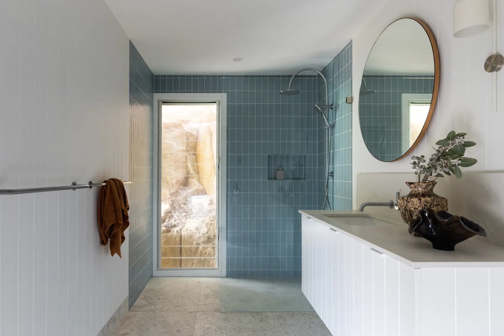

Why Coastal Light Behaves Differently
Coastal properties tend to receive more reflected light than homes further from the water, bouncing up off sand, ocean and pale hard surfaces outside as well as coming directly through the windows. That reflected light is brighter and often cooler in tone than inland light, which means a paint colour that looks warm and settled on a swatch in a showroom can read considerably starker once it is on a wall that faces open water or sky.
Warm White or Cool White?
Given how much cool, reflected light a coastal room already receives, we lean towards paint colours with a warmer undertone as a counterbalance, rather than compounding the coolness with a stark or blue-based white. This is the same principle we cover in more detail in Not All Whites Are Equal: undertone matters more than the colour name on the tin, and a white that looks perfect in one light can look entirely different in another.
North-Facing vs South-Facing Rooms
Orientation still matters just as much on the coast as anywhere else. North-facing rooms receive warm, direct light for most of the day and can generally handle a cooler or more saturated colour without feeling cold. South-facing rooms miss out on that direct warmth and tend to need a colour with more warmth built in to avoid feeling flat, particularly in a home that is already surrounded by cool, reflective light from the water.

A living space from our Whale Beach House project, where the palette was chosen to sit comfortably against constantly shifting coastal light.
Always Test on the Wall, Not the Swatch
This matters everywhere, but it matters more on the coast, where light changes so noticeably from morning to afternoon. Paint a sample directly onto the wall in question, not a piece of card propped against it, and look at it at different times of day before committing. A colour that looks right at midday can shift considerably by late afternoon once the light angle changes.
Our Go-To Approach at TSW
For coastal projects, we typically build the palette around warm, softly muted neutrals, close enough to white to stay calm and light-filled, but with enough warmth in the undertone to hold their own against the reflected light outside. Layered against natural materials like timber, linen and stone, the result is a home that feels settled and considered rather than washed out by its own view.
See how this approach comes together in practice in our Whale Beach House renovation, or get in touch for an Initial Consultation if you are working through a palette for your own coastal home.